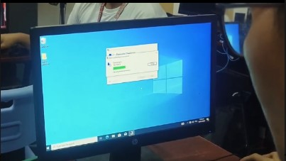
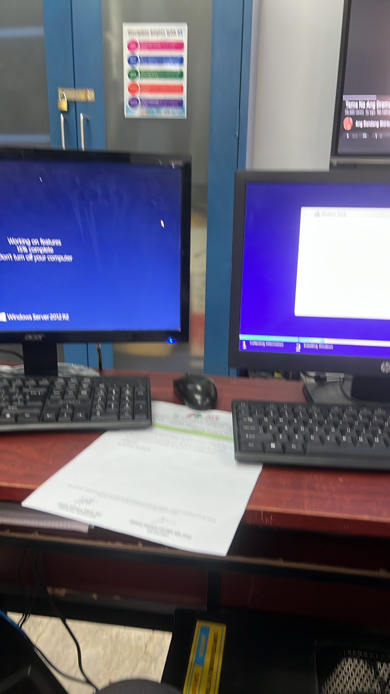
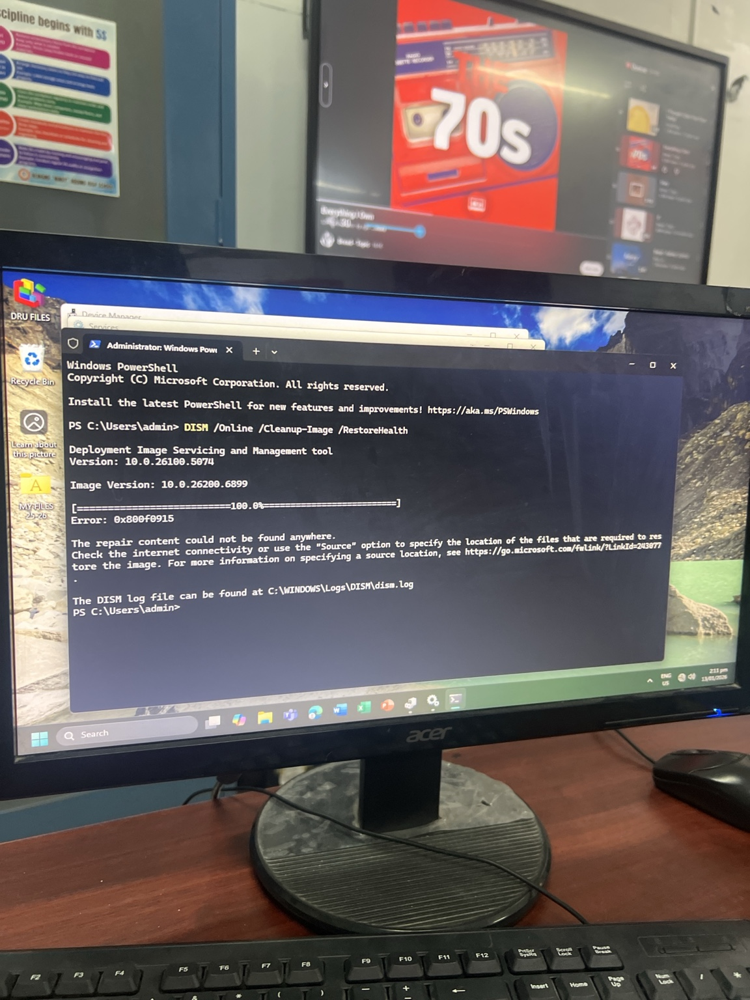

Computer Systems Servicing
Computer Systems Servicing is a technical field that focuses on maintaining and supporting computer systems in real environments. It includes basic networking, system installation, proper configuration, and troubleshooting using correct procedures. CSS is not only about knowing tools. It is about learning how to think when something is failing. It is the discipline of checking the basics first, confirming evidence, and applying solutions that are safe and repeatable. In school settings, CSS becomes more real because the goal is not just to “make it work once.” The goal is to make the system stable enough for students, teachers, and tasks that depend on it.
In my experience, CSS training teaches patience and accuracy. Some errors look complicated but are solved by correct diagnosis. Some errors look small but become worse if handled carelessly. Because of that, I try to document what I do, not just the results. Documentation makes troubleshooting easier the next time, and it also proves that the solution was not random. I treat the process as important as the outcome.
Why I Chose CSS
I chose CSS because I have always been curious about technology and how systems behave under pressure. I also had a real influence from my brother who is in the IT field. Seeing that environment made me respect the idea of being useful, stable, and skilled. I chose a practical track because I want a path where effort directly becomes capability. At the same time, I remain honest about my deeper dream. I want science, especially astronomy, biology, and botany. Those fields inspire me in a way that feels personal. But I learned that opportunity can be limited, and I do not want to stay stuck waiting for the perfect path. So I chose IT as a strong present foundation while keeping the part of me that still wants to explore science in the future.
What I Can Do
- Install and configure operating systems with correct drivers and stable settings.
- Diagnose boot problems and system errors using step-by-step verification.
- Use Command Prompt tools and recovery options responsibly when systems fail to load normally.
- Perform basic checks for hardware and software issues before applying changes.
- Assist classmates by explaining procedures in a calm and clear way during hands-on work.
- Support school technical needs when computers require setup, checking, or basic troubleshooting.
Documentation
The images below show my documentation and evidence from hands-on activities. I keep records because it helps me track what changed, what worked, and what improved after troubleshooting or configuration.


